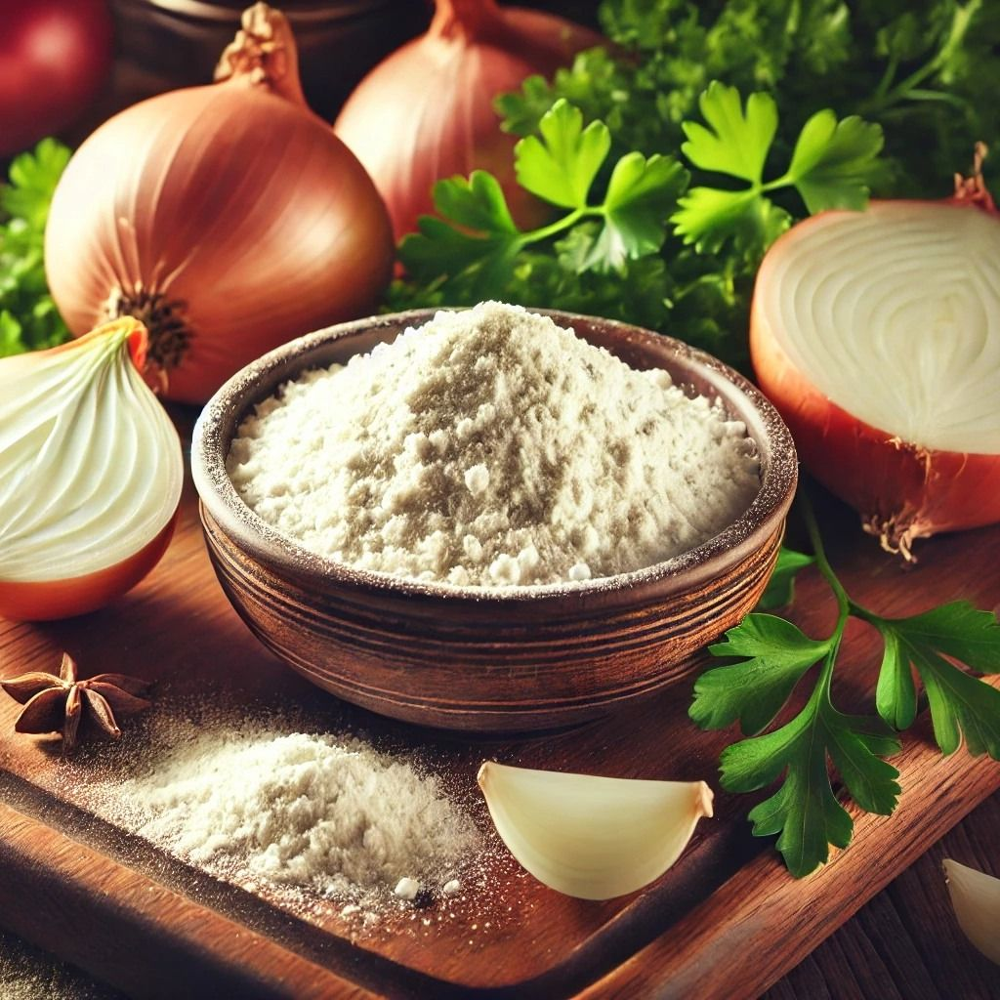

Our Vision
About Kasturi Export LLP
From Fresh Produce to Everyday Food Ingredients
Kasturi Export LLP is a manufacturer and supplier of dehydrated onion and garlic powders, based in Surat, Gujarat, India.
Our manufacturing approach is built around converting fresh onions and garlic into convenient, consistent and easy-to-use powdered ingredients.
From raw material selection to final packaging, we focus on maintaining a systematic process with attention to quality, hygiene and consistency.

Our Mission
To deliver reliable onion and garlic powder products that meet the practical requirements of food manufacturers, distributors, businesses and commercial users.
Fresh-to-Powder Manufacturing
We convert selected fresh produce into hygienic, easy-to-use powder ingredients.
Process Driven
Our structured workflow supports consistency from raw material to final dispatch.
Quality-Focused
We pay attention to quality controls across processing and packaging stages.
Business Ready
Products are prepared to suit food businesses, manufacturing operations and bulk purchase needs.